Fields are areas scattered around the map, where players are able to collect Pollen , which can be converted into Honey at their hive There are a total of 18 different fields in the game. Each field consists of different colors of flowers, those being red , Blue , White . The flowers also vary slightly each time a player joins a server. The more flowers in each square, the more pollen it gives and the faster it regrows,
| Field | ||
|---|---|---|
| Picture | Name | Source |
| 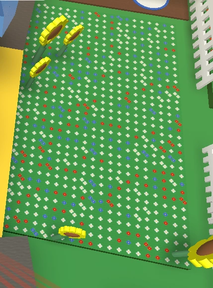 | Sunflower Field | The Sunflower Field is one of the five starting fields that a new player can go to. There are no mobs that protect this field. |
| 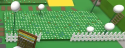 | Dandelion Field | The Dandelion Field is one of the five starting fields a new player can go to. There are no mobs that protect this field. |
| 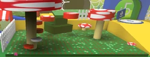 | Mushroom Field | The Mushroom Field is one of the five starting fields a new player can go to. It is the first red field accessible to players in the game. The field is protected by a level 1 ladybug. |
| 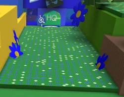 | Blue Flower | The Blue Flower Field is one of the five starting fields a new player can go to. It is the first blue field accessible in the game. It is protected by a level 1 rhino beetle. |
| 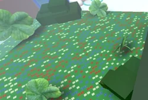 | Clover Field | The Clover Field is one of the five starting fields a new player can go to. It is protected by a ladybug and a rhino beetle. |
| 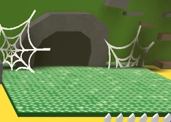 | Spider Field | The Spider Field is a field located behind the Basic Bee Gate and between the Strawberry Field and Bamboo Field. The field is protected by the spider. |
| 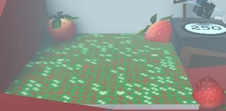 | Strawberry Field | The Strawberry Field is a field located past the Basic Bee Gate, to the left of the Spider Field, and beside the Vicious Bee Egg Claim. This field is protected by 2 Ladybugs; one level 2 and one level 3. |
| 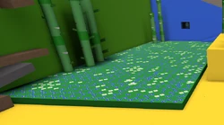 | Bamboo Field | The Bamboo Field is a field located past the Basic Bee Gate, to the right of the Spider Field, and 2 fields away from the Strawberry Field. It is protected by a level 2 and 3 rhino beetle. |
| 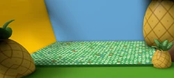 | Pineapple Patch | The Pineapple Patch is a field located behind the Brave Bee Gate and to the right of the Pro Shop. It is protected by a level 4 mantis and a level 5 rhino beetle. |
| 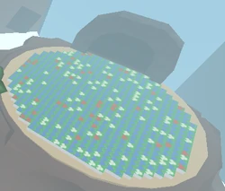 | Stump Field | The Stump Field is a field that was added in the 11/25/2018 update, and is located beyond the Brave Bee Gate next to the Pineapple Patch. It is protected by the Stump Snail. |
| 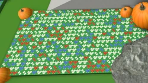 | Pumpkin Patch | The Pumpkin Patch is a field located beyond the Honey Bee Gate and beside the Cactus Field. It is protected by the Werewolf. |
| 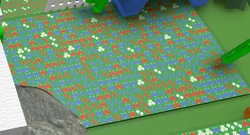 | Cactus Field | The Cactus Field is a field located behind the Honey Bee Gate and beside the Pumpkin Patch. It is protected by the Werewolf. |
| 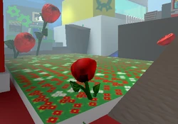 | Rose Field | The Rose Field is one of the four fields located past the Honey Bee Gate. This field can be found near the Red HQ. It is protected by two scorpions, one level 5, and the other level 6. |
| 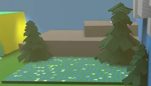 | Pine Tree Forest | The Pine Tree Forest is a field located past the Honey Bee Gate and near the Badge Bearer's Guild. It is protected by two mantises and the Werewolf. |
| 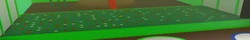 | Ant Field | The Ant Field is a field located behind the Ant Gate and near the Top Ant Exterminators leaderboard. It can only be accessed by starting the Ant Challenge which will summon waves of ants. |
| 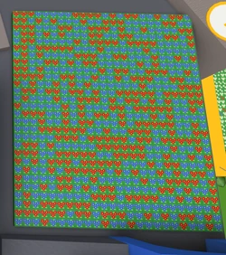 | Mountain Top Field | The Mountain Top Field is a field located behind the Lion Bee Gate. The Mondo Chick protects this field and respawns every hour. |
| 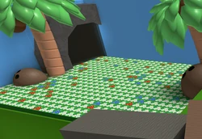 | Coconut Field | The Coconut Field is a field added in the 9/28/2019 update, located past the Windy Bee Gate and next to Spirit Bear. It is protected by the Coconut Crab. |
| 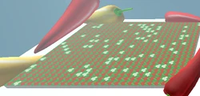 | Pepper Patch | The Pepper Patch is a field added in the 9/28/2019 update, located past the Windy Bee Gate, to the right of the Extreme Memory Match and to the left of the Wind Shrine. There are no mobs that protect this field. |